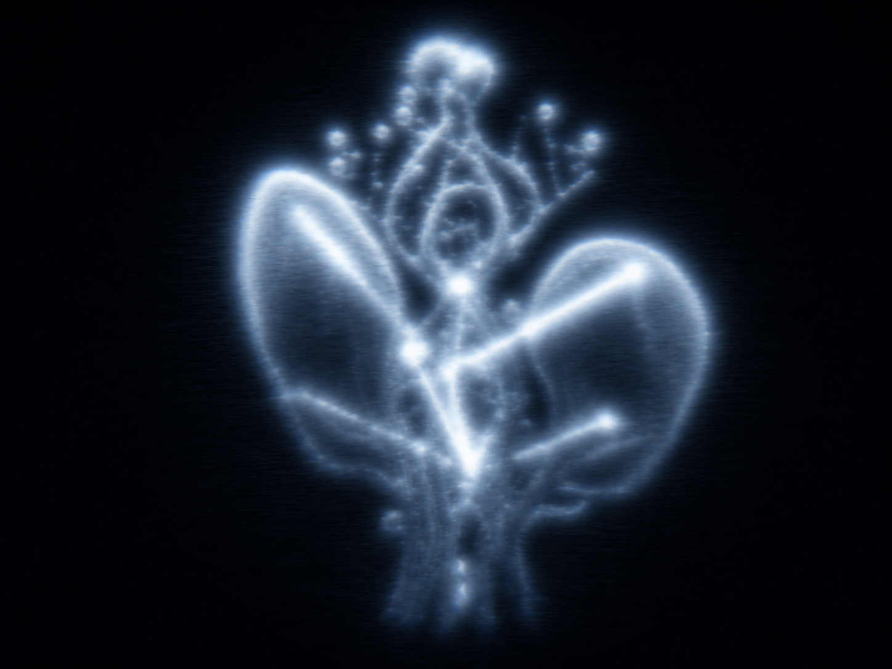

Social Seed / Seed of Us
Bio-digital group flower
Social
Seed
Enter a group through one questionnaire. Then three prototype days of group chat shape a blurred flower ultrasound report.
User Login
Seed Likert Questionnaire
Seed Assigned
种子已生成。下面是六组认同度得分和初始花朵倾向。
Seed 1
建构者
Seed Scores
Seed Chat
Flower Ultrasound Report
INITIAL SCANSOCIAL SEED / B-SCAN

Initial Flower State
Interpretation
Final AI Image / 三视图 Prompt Data
三轮完成后，这里会给出可复制给 AI 的最终花朵数据，用于生成最终图和建模三视图。
Final data is not ready yet.